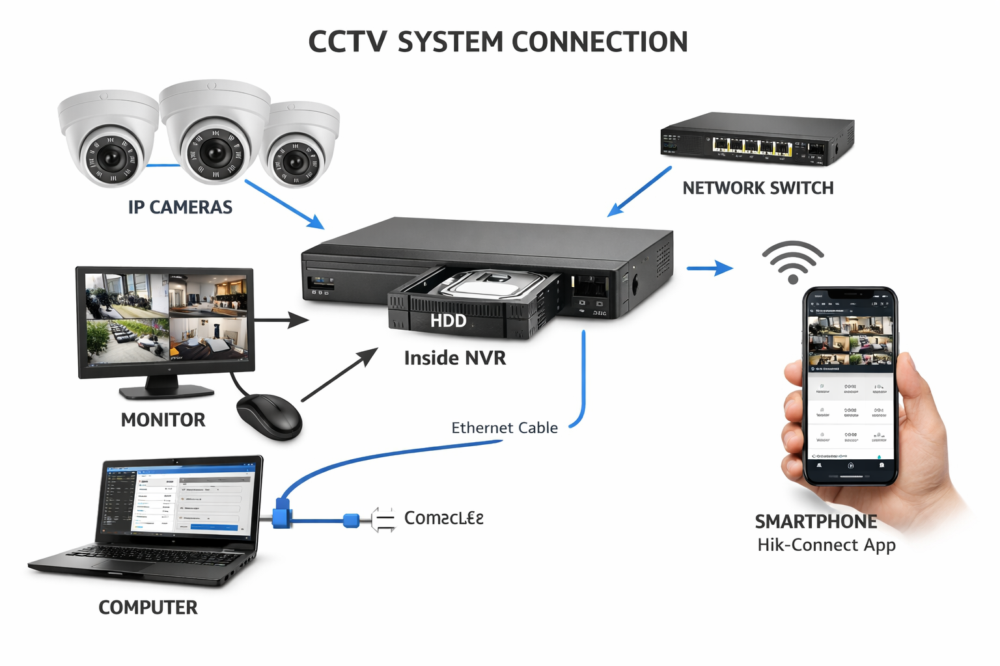

Learning outcome 3: Configure CCTV System
A. Management of Administration parameters settings
A parameter is a specific configurable option within a system that controls how it behaves.
Think of it as a control point you can adjust to customize the system.
In a CCTV system, parameters are the individual items you can modify inside the configuration menu.
🔹 Examples of CCTV Parameters
- Default password
- Recording storage location
- Recording schedule
- Video resolution
- Date and time settings
- Network IP address
- Motion detection sensitivity
A setting is the actual value you assign to a parameter.
If a parameter is the option, the setting is the choice you make for that option.
1️⃣ Change Default Password
🔹 What is a Default Password?
A default password is the original factory-set password that comes with a device when it is new.
For Hikvision devices:
- The default username is usually admin
- Older models used 12345
- Newer models require you to create a password during first activation
⚠ Why this matters:
- Default passwords are publicly known
- Leaving them unchanged makes the system vulnerable to hacking
- It is the first step in securing a CCTV system
🔐 Steps to Change Password on Hikvision Devices
A. On DVR (Digital Video Recorder)
Using Local Monitor (Mouse + Screen connected to DVR)
- Log in using current admin password
- Go to Menu
- Click Configuration
- Select User Management
- Choose admin
- Click Modify Password
- Enter:
- Old password
- New strong password
- Confirm password
- Click Save / OK
B. On NVR (Network Video Recorder)
- Log in
- Go to Menu
- Select Configuration
- Open User or User Management
- Select admin
- Click Edit / Modify Password
- Enter old and new password
- Save
C. On IP Camera (Hikvision) – Method 1: Using Web Browser
- Connect camera to network
- Enter camera IP address in browser
- Log in
- Go to Configuration
- Select User Management
- Click Modify Password
- Enter old password
- Enter new password
- Save
2️⃣ Set Recording Storage
🔹 What Does “Set Recording Storage” Mean?
It means choosing and configuring where video footage will be saved.
- Internal Hard Disk Drive (HDD)
- External HDD
- Network storage
- NAS
✔ Ensures video is saved properly
✔ Prevents “No Disk” errors
✔ Avoids data loss
✔ Allows continuous recording
✔ Enables playback of recorded footage
If storage is not configured:
• Cameras may show live view
• But recording will NOT happen
📹 Steps to Set Recording Storage on DVR
- Log in
- Go to Menu
- Click Configuration
- Select Storage
- Open HDD Management
- Check HDD status (Normal / Uninitialized)
- If uninitialized:
- Select HDD
- Click Init
- Save settings
- Optional: Go to Record Schedule, Enable continuous or motion recording
📹 Steps to Set Recording Storage on NVR
- Log in
- Go to Menu
- Select Configuration → Storage → HDD Management
- Check HDD status
- If new HDD, select and initialize
- Set recording schedule under Record → Schedule
Management of CCTV User Accounts
User account management controls who can access the CCTV system and what they are allowed to do.
Proper management improves:
- Security
- Accountability
- System control
- Data protection
1️⃣ Identification of User Account
It is the process of recognizing and defining different users in the CCTV system. Each user must have:
- A unique username
- A password
- Assigned access rights (permissions)
🔹 Common User Types in Hikvision Devices
| User Type | Access Level |
|---|---|
| Admin | Full control of system |
| Operator | Live view + playback |
| Guest | Live view only |
✔ Prevents unauthorized access
✔ Tracks user activities
✔ Limits system misuse
✔ Improves security control
2️⃣ Creation of User Account
It is the process of adding a new authorized person to access the CCTV system.
📹 Steps to Create User Account on DVR / NVR
- Log in as admin
- Go to Menu → Configuration → User Management
- Click Add User
- Enter username and password
- Assign permissions:
- Live view
- Playback
- PTZ control
- Configuration rights
- Click Save
ASSIGN PERMISSION EXPLAINED
1️⃣ Live View Permission
Allows the user to watch real-time video from connected cameras.
- View live camera footage
- Switch between cameras
- View multiple camera screens
- Monitor activities as they happen
Cannot: watch recorded footage, change settings, control PTZ (unless granted).
2️⃣ Playback Permission
Allows access to previously recorded video footage.
- Search recordings by date/time
- Replay past events
- Pause, fast-forward, rewind
- Download or back up footage (if allowed)
3️⃣ PTZ Control Permission
Allows control of Pan, Tilt, Zoom cameras.
- Pan, Tilt, Zoom, Set presets, Patrol
- Used for tracking moving objects
4️⃣ Configuration Rights
Allows changing system settings including cameras, storage, schedules, and user accounts.
⚠ Usually only the Admin should have full configuration rights.
🌐 On IP Camera (Web Interface)
- Enter camera IP in browser
- Log in as admin
- Go to Configuration → User Management
- Click Add, enter details
- Assign permissions and Save
3️⃣ Setting of Factor Authentication
Authentication means verifying a user's identity before granting access.
🔐 Knowledge Factor Authentication
Something the user knows (password, PIN, security answer). Hikvision: username + password.
🔐 Two-Factor Authentication (2FA)
Requires two types of verification:
- Something you know (password)
- Something you have (phone / verification code)
In Hikvision: login password + code via Email or Hik-Connect.
Configure CCTV IP Addresses
IP addresses allow devices to communicate on a network.
1️⃣ Static IP Address
Manually assigned, does not change. Ensures stable remote access and port forwarding.
Example: NVR IP: 192.168.1.200, Subnet Mask: 255.255.255.0, Gateway: 192.168.1.1
Steps to Set Static IP on DVR / NVR
- Log in as admin → Menu → Configuration → Network → General/TCP-IP
- Uncheck DHCP
- Enter IP, Subnet Mask, Gateway, DNS
- Save & restart if required
2️⃣ Dynamic IP Address
Assigned automatically via DHCP. May change when device or router restarts. Not recommended for main DVR/NVR.
Steps to Enable Dynamic IP (DHCP)
- Log in → Configuration → Network → TCP/IP
- Check Enable DHCP
- Save settings
🎯 Best Practice for CCTV Installations
- Use Static IP for DVR, NVR, main IP cameras
- Use Dynamic IP for temporary or small home systems
Apply Settings of CCTV Recordings
1️⃣ Video Format & Data Compression
Compression reduces video file size and network bandwidth usage.
Example: Raw 100GB → Compressed 10–20GB using H.264/H.265.
2️⃣ Encoding & 3️⃣ Decoding
Encoding compresses video for storage; decoding converts back for playback.
Steps to Set Video Format
- Log in → Menu → Configuration → Video / Encoding
- Select camera channel
- Choose compression type (H.264 / H.265)
- Save
2️⃣ Overwrite Capability
Automatically replaces old recordings when storage is full.
- Menu → Configuration → Storage → Advanced/HDD settings
- Enable Overwrite
- Save
3️⃣ Backup Frequency
How often footage is copied for safekeeping (Daily, Weekly, Monthly, After incident).
- Insert USB → Playback → Search → Select video → Export / Backup → Choose format → Start
4️⃣ Set Time and Date
- Menu → Configuration → System → Time Settings
- Set Date, Time, Time zone
- Enable NTP if connected to internet
- Save settings
5️⃣ Set Recording Mode
Defines how and when cameras record:
- Continuous Recording – 24/7
- Motion Detection Recording – only when motion detected
- Scheduled Recording – specific times
- Menu → Configuration → Record → Schedule
- Select camera channel
- Select recording type (Continuous / Motion / Schedule)
- Set time grid
- Save settings
Documenting CCTV Functionalities
1️⃣ Introduction to Documentation
Provides a detailed record of the CCTV system, components, configuration, and usage.
- System overview
- Troubleshooting
- Legal compliance
- Guides upgrades
2️⃣ CCTV System Requirements
Defines what is needed for the CCTV to operate effectively:
- Hardware: DVR/NVR, Cameras, HDD, Power, Network
- Software: CMS, Mobile App, Firmware
- Environment: mounting, lighting, temperature/humidity
3️⃣ Tools, Materials, and Equipment
| Category | Examples |
|---|---|
| Tools | Screwdrivers, crimping tools, cable testers |
| Materials | Cables, connectors, brackets |
| Equipment | Cameras, DVR/NVR, monitors, storage, power |
4️⃣ CCTV Diagram
A CCTV diagram visually represents how the system components are connected. It provides a clear reference for installation, troubleshooting, and future expansion.
🔹 Key Elements
- IP Camera locations
- NVR position
- Monitor connected to NVR
- Mouse connected to NVR
- HDD inside NVR
- Network Switch connectivity
- Computer connected to NVR via Ethernet (with configuration software)
- Smartphone using Hik-Connect app
- Power sources for all devices
🔹 Purpose
- Helps technicians understand the complete system layout
- Assists in installation, maintenance, and troubleshooting
- Supports future expansion plans
- Provides a clear reference for configuring remote access (computer & smartphone)
💡 Visual Representation: IP Cameras → NVR → Network Switch → Monitor / Mouse, with HDD inside NVR; Computer connected via Ethernet for configuration; Smartphone connected via Hik-Connect app.

5️⃣ Cost Documentation
Definition: Cost documentation is the process of recording and estimating all expenses involved in setting up a CCTV system, including device specifications, unit costs, and total expenditure. It provides a clear reference for budgeting, planning, and accountability.
Cost estimation is made up of three components:
- Item Specifications – Description or model of the device.
- Item Costs – Price per unit in Rwandan Francs (RWF).
- Total Cost – Sum of all item costs.
📌 1. Item Specifications
| Item | Specifications | Quantity |
|---|---|---|
| IP Camera | Hikvision DS-2CD2143G0-I, 4MP, IR | 4 |
| NVR | Hikvision DS-7204HQHI-K1, 4 Channel | 1 |
| Hard Drive | Western Digital Purple 2TB (inside NVR) | 1 |
| Network Switch | 8-Port Gigabit Switch | 1 |
| Monitor | 22” LED Monitor | 1 |
| Mouse | USB Mouse for NVR | 1 |
| Cables & Connectors | UTP Cat6 cables + BNC connectors | 1 set |
| Computer | Laptop with configuration software | 1 |
| Smartphone | Mobile device with Hik-Connect App | 1 |
| Installation / Labor | Mounting, setup, configuration | 1 |
📌 2. Item Costs
| Item | Quantity | Unit Cost (RWF) | Total Cost per Item (RWF) |
|---|---|---|---|
| IP Camera | 4 | 150,000 | 600,000 |
| NVR | 1 | 300,000 | 300,000 |
| Hard Drive | 1 | 120,000 | 120,000 |
| Network Switch | 1 | 80,000 | 80,000 |
| Monitor | 1 | 150,000 | 150,000 |
| Mouse | 1 | 15,000 | 15,000 |
| Cables & Connectors | 1 set | 50,000 | 50,000 |
| Computer | 1 | 600,000 | 600,000 |
| Smartphone | 1 | 400,000 | 400,000 |
| Installation / Labor | 1 | 100,000 | 100,000 |
📌 3. Total Cost
| Grand Total (RWF) | 2,415,000 |
|---|---|
| Maintenance / Contingency (RWF) | 150,000 |
| Final Total (RWF) | 2,565,000 |
6️⃣ CCTV System Settings
Documenting system settings ensures consistency and easier troubleshooting:
- Network Configuration (IP addresses, gateway, subnet)
- Recording Settings (Video format, mode, overwrite, backup)
- User Accounts (permissions, authentication)
- Camera Settings (PTZ, resolution, motion sensitivity)
- Time & Date (timezone, NTP)